O poveste cusută cu răbdare, dragoste și credința că
fiecare femeie merită să se simtă extraordinară.
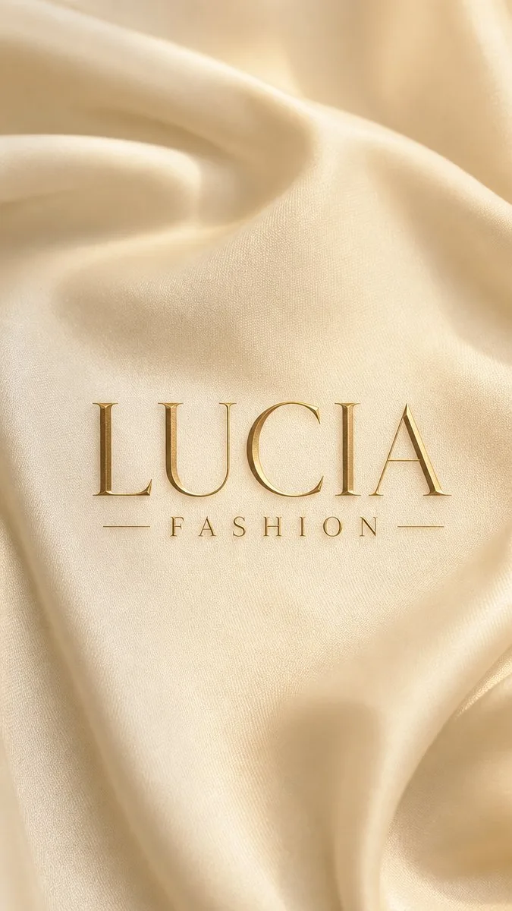
Lucia Fashion nu este doar un atelier. Este o promisiune făcută fiecărei femei care pășește pe ușa noastră — că va pleca cu ceva unic, ceva creat special pentru ea, ceva ce va purta cu mândrie ani îndelungați.
Totul a început cu o mașină de cusut, un sul de mătase și o convingere simplă: îmbrăcămintea bună nu ține de tendințe — ține de artizanat, de atenție și de sufletul celui care o creează.
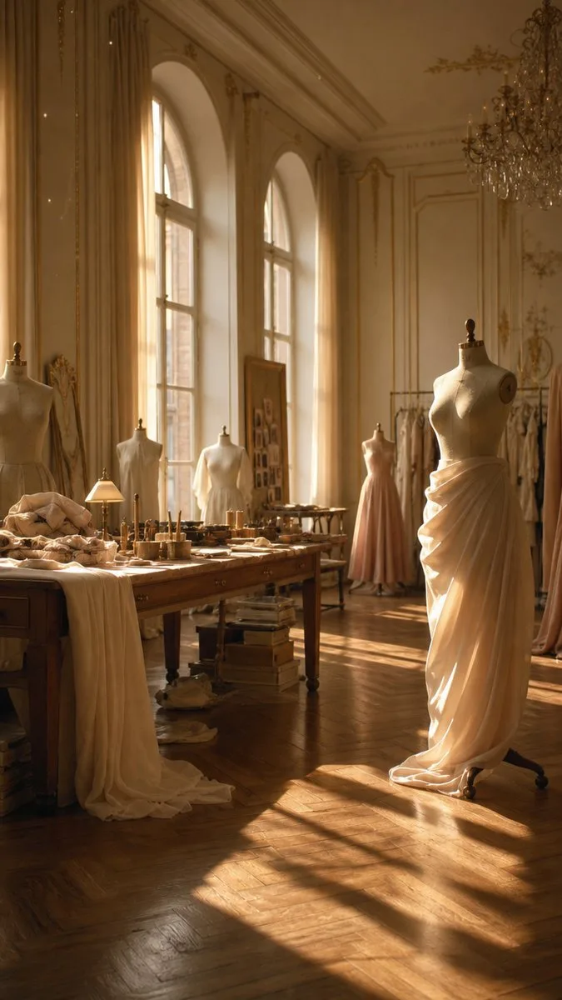
„Fiecare zi în atelier este o pagină nouă dintr-o poveste fără sfârșit."
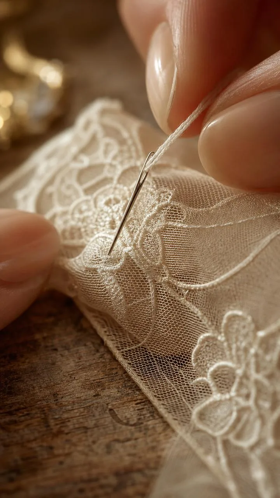
Artizanat autentic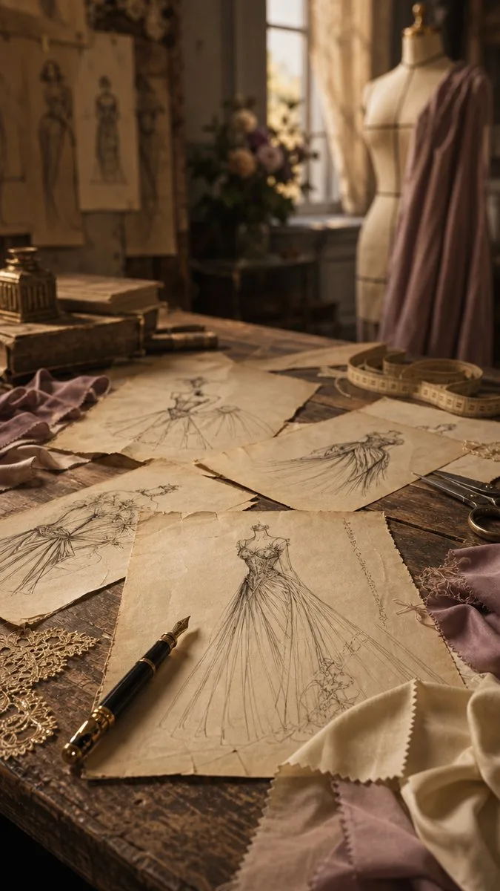
De la schiță la realitate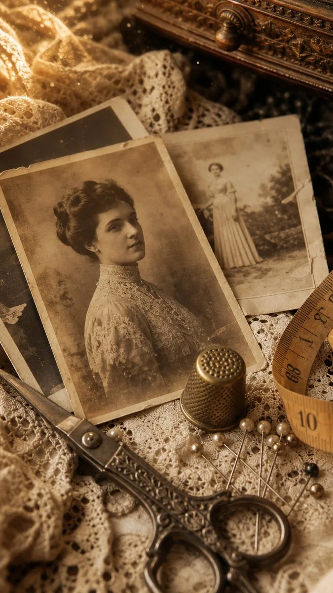
Tradiție și precizieÎntr-o lume a producției de masă, noi alegem calea mai grea și mai frumoasă — cusătura manuală, atenția la detaliu, broderia înflorită fir cu fir.
Fiecare piesă care iese din atelierul nostru poartă amprenta unui mesteșug cultivat cu răbdare de-a lungul a peste 15 ani. Nu există grabă, nu există compromisuri — există doar perfecțiunea cusăturii finale.
„O rochie bună nu se cumpără — se creează, cu fiecare fir ales cu dragoste."
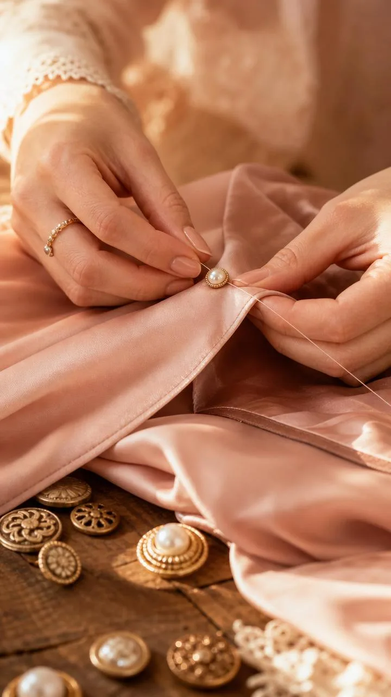
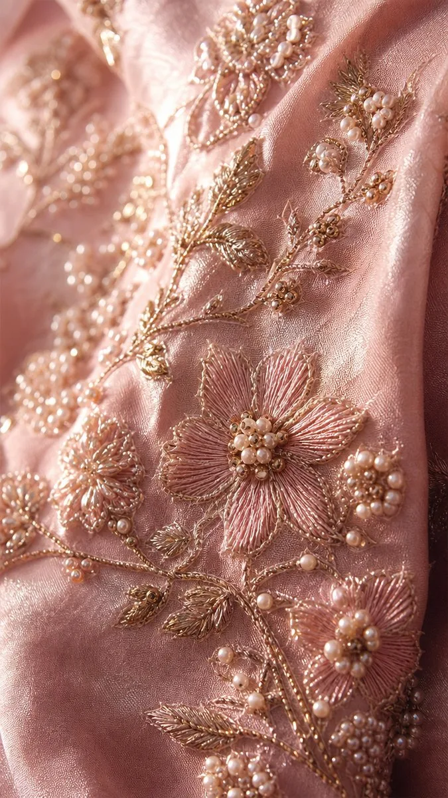
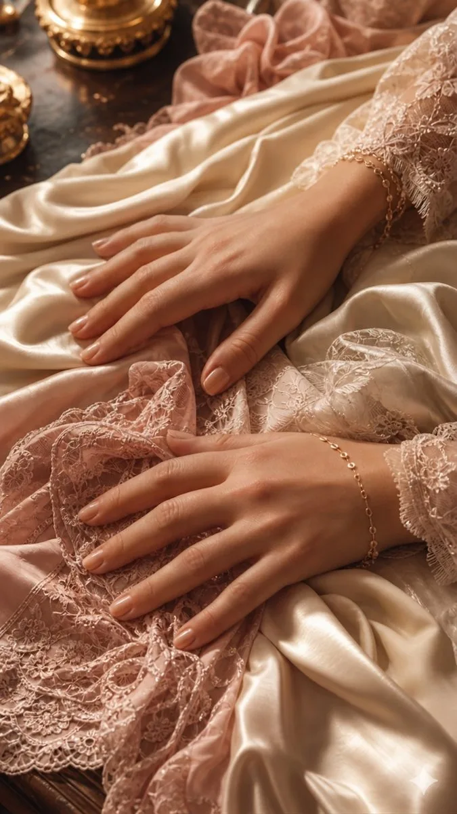
„Mătasea simte mâinile care o ating. De aceea o atingem cu grijă."
De la rochii de mireasă cu trenă regală, la ținute de seară ce domină sala de bal — fiecare creație Lucia Fashion este gândită să transforme momentul în amintire.
Lucrăm cu fiecare clientă în parte, ascultăm visul ei și îl transpunem în țesătură, în formă, în fiecare detaliu. Nu există două rochii identice, pentru că nu există două femei identice.
„Rochia perfectă nu există — există rochia perfectă pentru tine."
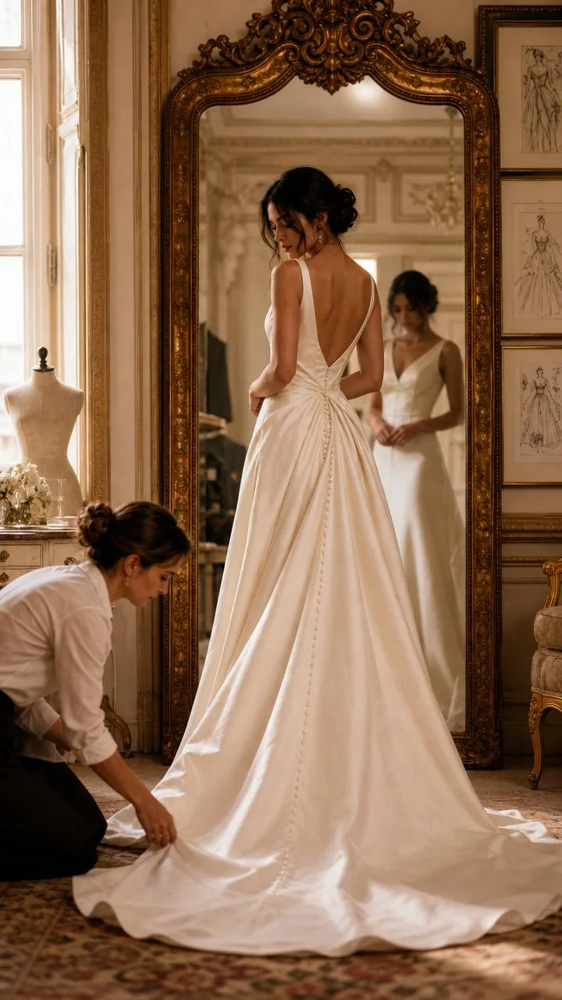
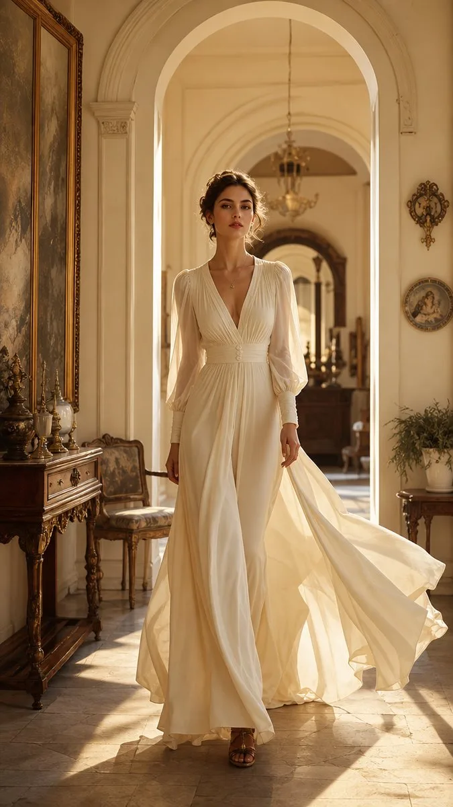
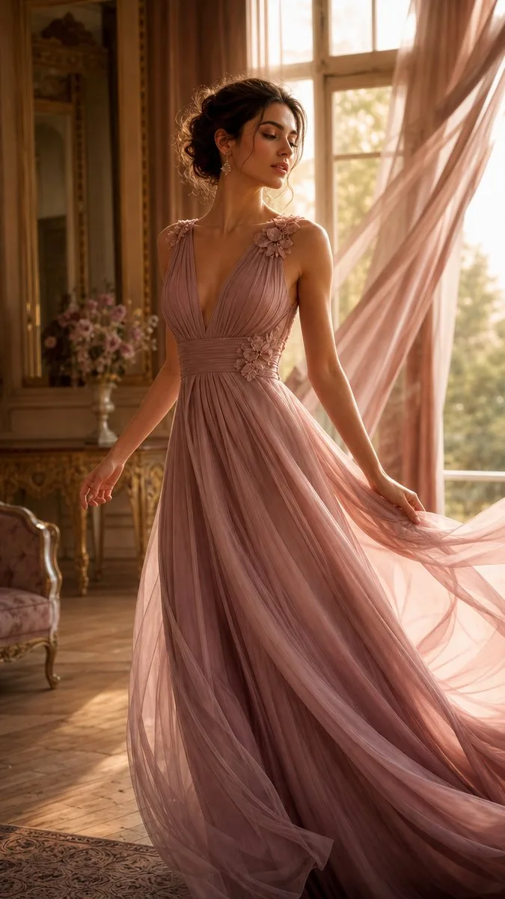
E muncă, dar e și pasiune —— Elena Tudoran, creatoarea Lucia Fashion
ai o mulțumire sufletească.
De mică, Elena destrăma materiale și împodobea păpușile cu franjuri și drapaje. Prietenele o invidiau — rochițele ei de păpuși arătau „într-un fel anume". Fără tipar, fără reguli — doar instinct și dragoste pentru frumos.
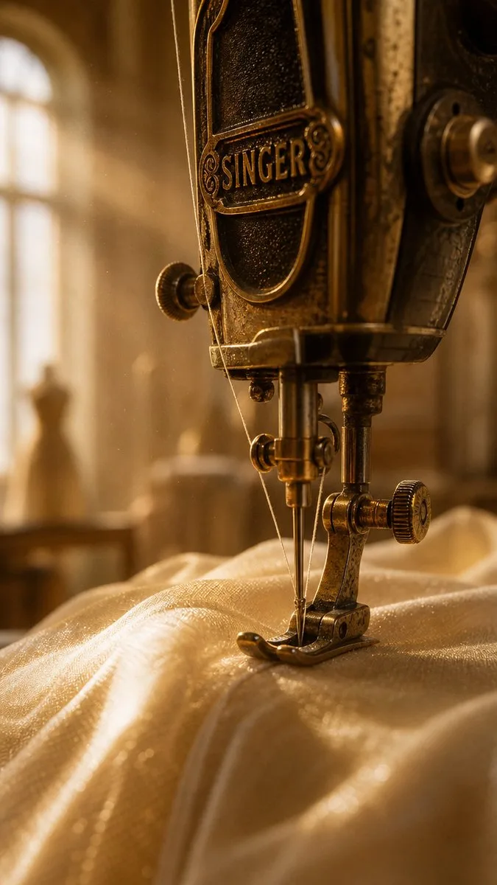
La 12 ani, Elena se înscrie la clubul „Mâini Îndemânatice" unde descoperă arta florilor din materiale textile, broderiei și ornamentului. Face coronițe pentru fete, împodobește lumânări — pasiunea se transformă în meșteșug.
Elena începe să creeze rochii pentru colegele de liceu. Metoda ei e unică: pune materialul direct pe om, fără tipar, lasă-l să cadă natural și brodează, prinde, modelează. Fiecare piesă ieșea diferit — unicat prin natură.
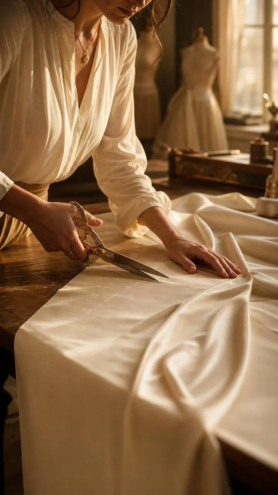
Când Lucia era la liceu, Elena face pasul firesc: înființează firma. Vestea se duce din gură în gură — clientele vin, admiră, revin. Fiecare rochie iese diferit, fiecare femeie pleacă cu ceva unic, croit special pentru ea.
Reputația atelierului depășește granițele Bucureștiului. Elena creează costume pentru emisiunea „Bravo, ai stil!", pentru trupe de teatru și de dans. Arta ei ajunge pe scenă și pe micul ecran — mereu recunoscută, mereu apreciată.
Aceeași grijă pentru detaliu, aceleași materiale de calitate — aplicate acum și lenjeriilorde pat din bumbac ramforsat 100%. Eleganța atelierului intră în dormitorul fiecărei cliente.
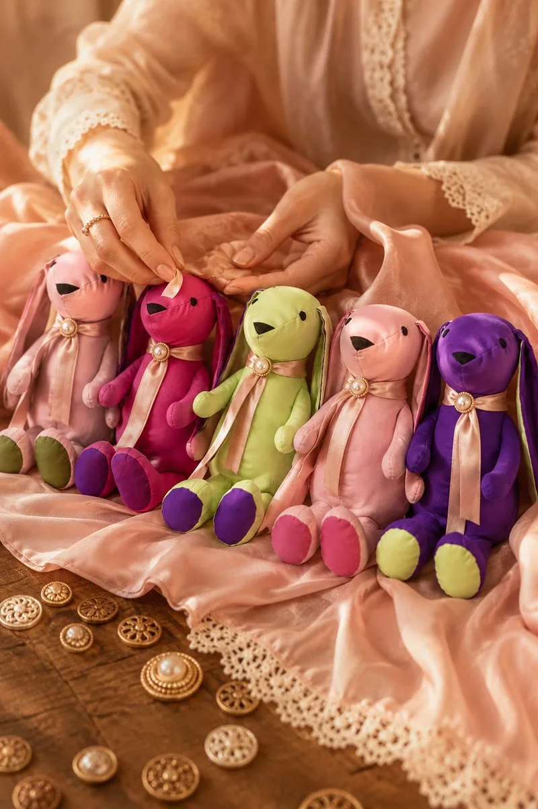
Creativitatea nu are granițe. Elena extinde atelierul și în lumea copiilor — jucării handmade croite cu aceeași atenție și dragoste cu care îmbracă miresel și damele de onoare.
Creativitatea Elenei nu se oprește la textile. Din 2023, pictura devine o nouă formă de exprimare — tablouri în acuarelă și ulei, cu aceeași sensibilitate și aten